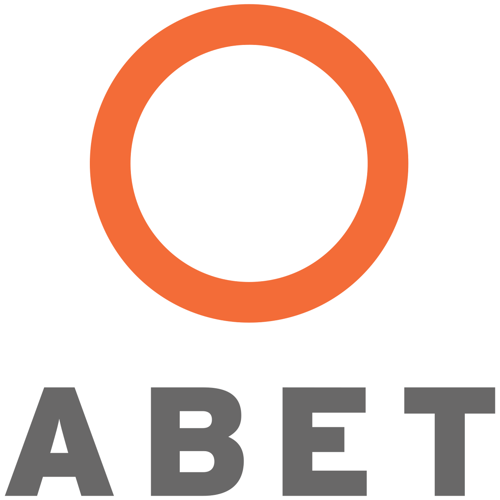

Computing Professionalism and Ethics
Washington Accord
(e) Ability to understand professional, ethical, legal, security and social issues and responsibilities.

CHED
An ability to recognize the legal. social, ethical and professional issues involved in the utilization of computer technology and be guided by the adoption of appropriate professional, ethical and legal practices.

ABET Student Outcomes
An ability to recognize professional responsibilities and make informed judgments in computing practice based on legal and ethical principles.
Employability Outcomes
Ability to have a greater insight into decision-making process.